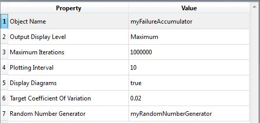

Failure Probability Accumulator
Class Name
- RFailureProbabilityAccumulator
Location in Objects Pane
- Methods > Accumulator > Failure Probability
Properties

Object Name
- Name of the object in Rt
- Allowable characters are upper-case and lower-case letters, numbers, and underscore (“_”).
- The name is unique and case-sensitive.
Output Display Level
- Determines the level of messages and outputs of this object to print in the Output Pane.
- The higher the level of outputs, the more time it takes to run the analysis.
Maximum Iterations
- Maximum number of samples
- The analysis will finish when the number of created samples reaches this threshold, regardless of the target coefficient of variation. The higher its value is, the less accurate the analyses will be.
Plotting Interval
- Determines the frequency at which the output is plotted.
Display Diagrams
- Determines whether the model is allowed to plot a diagram.
Target Coefficient Of Variation
- \({{\delta_P}_f}\) = Target coefficient of variation of sampling
Random Number Generator
- Determines the random number generator object which generates a sequence of independent random numbers from a normal distribution.
Output
- This object collects the outputs, calculates the probability of failure and coefficient of variation and decides whether the sampling continues.
Right-click Menu
Remove